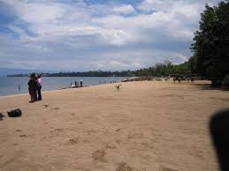
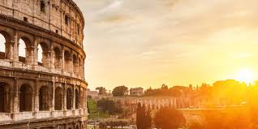

The Most Beautiful Places In The World!!!(According to me.)
There are many charming spots in this earth we live in. But for me, there are some that are Most appealing than others. Here are the ones that I like the most!
There are many charming spots in this earth we live in. But for me, there are some that are Most appealing than others. Here are the ones that I like the most!
Bora Bora is a volcanic island in the Leeward Islands of French Polynesia, is renowned for its stunning turquoise lagoon, white sand beaches, and luxury resorts.

Gisenyi (also referred to by its new name Rubavu) is a large town of Rwanda in central Africa spread over several hills . I love this town because it is ashore of the lake Kivu and has a beautiful beach. I spent most of my childhood there. I really miss this place.
Paris is the capital of France and it is located near the Seine river. What I love about Paris is that this city is a great cultural and historical center, so much so that one can say that Paris is an open-air museum.

Rome is the capital city of Italy which is an european country located near the Mediteranean Sea. Rome is ashore the Tiber river and is known for its rich history, art, and architecture. The city is home to many iconic landmarks, including the Colosseum, the Roman Forum, and the Vatican City. There are many things to do and discover in Rome. and Italian gastronomy, particularly Roman, is delicious.
